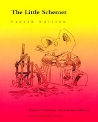
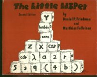
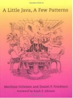

Dan Friedman æ¯ Indiana 大å¦çææï¼Lisp (Scheme) è¯è¨ç主è¦ç 究è ä¹ä¸ãä»ä¸»è¦çèä½ãThe Little Schemerãï¼å身å«ãThe Little Lisperã) æ¯ç¨åºè¯è¨çæå ·å½±ååç书ç±ä¹ä¸ãç°å¨å¾å¤ç¨åºè¯è¨ççå è级人ç©ï¼å½å¹´é½æ¯çè¿æ¬âå°äººä¹¦âå¦ä¼äº Lisp/Schemeï¼æå³å¿è¿å ¥è¿ä¸é¢åã


ä»å¯¹ç¨åºè¯è¨çç解ï¼å¯ä»¥è¯´æ¯ä¸ççæé«æ åãå¾å¯æçæ¯ï¼ç±äºä»ä¸ªäººçä½è°ï¼ä½ çè¿äºä¹¦çååï¼å°é¢ï¼é¡µæ°ï¼ä»·æ ¼ï¼ä»¥åéé¢åå°å©çè¯ï¼å°±çå¾åºæ¥ï¼ï¼ä»åå°å¾å¤äººç误解ãå¾å¤äººä»¥ä¸ºä»åªæå¾ Scheme è¿ç§âç±»åç³»ç»è½åçè¯è¨âãæäºäººè§å¾ä»åªé¡¾èªå·±ç©ï¼ä¸æ±âä¸è¿âï¼è§å¾ä»çç 究éé¨é 车ï¼ä¸âå沿âãæä¹è¯¯è§£è¿ä»ï¼çè³å¨è§é¢ä¹åï¼æ ¹æ®è¿äºä¹¦çå°é¢ï¼ææå®ä»è¯å®æ¯ä¸ªå¹´è½»å°ä¼ãç»æå¢ï¼ç¬¬ä¸æ¬¡è§å°ä»çæ¶åï¼ä»å·²ç»è¿äº60å²å¤§å¯¿ã
ç¨åºè¯è¨çç 究è 们å¾å¾è¿½éä¸äºâæ°æ¦å¿µâï¼å´æªè½æ³å°ï¼å¾å¤è¿äºæ°æ¦å¿µæ©å¨å åå¹´å就被 Friedman æ³å°äºã举个ä¾åï¼Haskell æç¨ç lazy evaluation 模åï¼ææ©å°±æ¯ä»å¨ 1976 å¹´å¨ä¸ David Wise ååç论æâCONS should not Evaluate its Argumentsâä¸æåºæ¥çã
è½ç¶åäº The Little Schemerï¼ ä½ Friedman çå¦è¯å¹¶ä¸éäº Schemeãä»ä¸æå°å®éªåç§å ¶å®çè¯è¨è®¾è®¡ï¼å æ¬å ML ä¸ç±»çå«æéæç±»åç³»ç»çå½æ°å¼è¯è¨ï¼é»è¾å¼è¯è¨ï¼é¢å对象è¯è¨ï¼ç¨äºå®çè¯æçè¯è¨ççãå¨æ¯æ¬¡çè¯éªä¹åï¼ä»å ä¹é½ä¼åä¸æ¬ä¹¦ï¼æ示è¿äºè¯è¨æç²¾è¦çé¨åã
è§å¾ ML æ¯ Scheme å è¿å¾å¤ç人们åºè¯¥çç Friedman è¿æ¬ä¹¦ï¼The Little MLerï¼
æ³è¦çæ£ç解 Java 设计模å¼ç人ï¼å¯ä»¥ççè¿æ¬ï¼A Little Java, A Few Patterns:

è¿äºä¸è¥¿çä¼ç¹åå¼±ç¹ï¼ä»¿ä½å¨ä»å¿éé½ææ°ãä»å ä¹æ»æ¯æåæ£ç¡®çåè¿æ¹åã
å¯æçæ¯ï¼ç±äºä¸ªäººåå ï¼Friedman å§ç»æ²¡ææ为ææ£å¼ç导å¸ï¼Friedman âè¶ ç¶ç©å¤âï¼å ä¹å®å ¨ä¸å ³å¿èªå·±çå¦çä»ä¹æ¶åè½æ¯ä¸ãä½ä»ç¡®å®æ¯è¿ä¸çä¸æä¼ææå¤ä¸è¥¿ç人ï¼æ以ææ³åä¸äºå ³äºä»çå°æ äºãä¹è®¸ä½ è½ä»ä¸çåºï¼ä¸ä¸ªçæ£çæè²è æ¯ä»ä¹æ ·åçãææ¥ IU ä¹åï¼ä¸ä½å¸å åè¯æï¼Dan Friedman å°±åæç¯çéççé夫 (Gandalf)ï¼æ¥äºä¹ååç°ç¡®å®å¾åã
第ä¸æ¬¡å¨åå ¬å®¤è§å° Friedman çæ¶åï¼ä»å¯¹æ说ï¼âæ¥ï¼ç»æè®²è®²ä½ ç¥éäºä»ä¹ï¼âæèªè±ªå°è¯´ï¼âæå¨ Cornell ä¸è¿ç 究ççç¨åºè¯è¨è¯¾ï¼ä¼ç¨ ML å Haskellï¼çè¿ Paul Graham ç On Lispï¼Peter Norvig ç Paradigms of Artificial Intelligence Programming, Richard Gabriel çä¸äºæç« ...â ä»ççæç¬äºï¼âä¸éï¼ä½ å·²ç»æä¸å®åºç¡â¦â¦â
è¿ä¹å 年以åï¼ææåç°ä»åè¯çå¾®ç¬éé¢ï¼éèçé¾ä»¥å¯é½¿çç§å¯ï¼å½æ¶çææ¯å¤ä¹çå¹¼ç¨ãå¨ä»çè¿ç§å¾ªå¾ªå诱ä¹ä¸ï¼ææéæ¸çæç½äºï¼ç¥è¯ç深度æ¯æ æ¢å¢çãä»çæ°´å¹³ï¼è¿å¨ä»¥ä¸è¿äºäººä¹ä¸ï¼å¯æ¯åºäºè°¦èï¼ä»ä¸è½èªå·±æè¿è¯è¯´åºæ¥ã
Dan Friedman å·²ç»è¿è¿è¶ è¿äºéä¼å¹´é¾ï¼ä»ç¶åææå¦ãä»çæ¬ç§çç¨åºè¯è¨è¯¾ç¨ C311 æ¯ IU çâæ级课ç¨âãæææ¬ä½©çï¼æ¯ä»é£å©åè¬ç好å¥å¿åæ¢ç´¢ç²¾ç¥ãå ä¹æ¯ä¸å¹´ç C311ï¼ä»é½ä¼åæä¸åçä¸è¥¿æ¥å å®è¯¾ç¨å 容ãææ¶åæ¯ä¸ç§æ°çé»è¾ç¼ç¨è¯è¨ (å« miniKanren)ï¼ææ¶åæ¯äºå°æå·§ ï¼æ¯å¦æ Scheme ç¼è¯æ C å´ä¸ä¼å æ 溢åºï¼ï¼ççâ¦â¦
Friedman ç 究ä¸ä¸ªä¸è¥¿çæ¶åæ»æ¯å ¨èº«å¿çæå ¥ï¼æ§çççç±ãèªä»å¼å§è®¾è®¡ä¸ä¸ªå« miniKanren çé»è¾ç¼ç¨è¯è¨ï¼Friedman å¤äºä¸å¥å£å¤´ç¦ ï¼âDoes it run backwards?âï¼è½ååè¿è¡åï¼ï¼å 为é»è¾å¼çè¯è¨ï¼åPrologï¼çç¨åºï¼é½æ¯è½âååè¿è¡âçãæ®éç¨åºè¯è¨åçç¨åºï¼å¦æä½ ç»å®ä¸ä¸ªè¾å ¥ï¼å®ä¼ç»ä½ ä¸ä¸ªè¾åºãä½æ¯é»è¾å¼è¯è¨å¾ç¹å«ï¼å¦æä½ ç»å®ä¸ä¸ªè¾åºï¼å®å¯ä»¥åè¿æ¥è¿è¡ï¼ç»ä½ ææå¯è½çè¾å ¥ãä½æ¯ Friedman ççèµ°ç«å ¥éäºãä¸ç®¡å«äººå¨è®²ä»ä¹ï¼ç»å¸¸æåé½ä¼è¢«ä»é®ä¸å¥ï¼âDoes it run backwards?âè®©ä½ åç¬ä¸å¾ã
Friedman æä¸ä¸ªæ¬é¢åç人é½ç¥éçâå¼±ç¹âââä»ä¸å欢éæç±»åç³»ç» (static type system)ãå ¶å® Scheme ä¸å®¶ä»¬å¤§é¨åé½ä¸å欢éæç±»åç³»ç»ã为æ¤ï¼ä»æ·±åâç±»åä¸å®¶â们ç误解çè³éè§ï¼å¯æ¯ä»é½ä»å®¹å¯¹å¾ ä¹ã
æä¸æ¬¡å¨ä»çè¿é¶è¯¾ç¨ B621 ä¸ï¼ä»ç»æ们åºäºä¸éé¢ï¼ç¨ Scheme å®ç° ML å Haskell æç¨ç Hindley-Milner ç±»åç³»ç»ãè¿ç§ç±»åç³»ç»çå·¥ä½åçä¸è¬æ¯ï¼è¾å ¥ä¸ä¸ªç¨åºï¼å®ç»è¿å¯¹ç¨åºè¿è¡ç±»åæ¨å¯¼ï¼type inferenceï¼ï¼è¾åºä¸ä¸ªç±»åãå¦æç¨åºéæç±»åé误ï¼å®å°±ä¼æ¥éãç±äºä¹åå¨ Cornell ç¨ ML å®ç°è¿è¿ä¸è¥¿ï¼åå ä¸æ¥å° IU ä¹å对æ½è±¡è§£é (abstract interpretation) çè¿ä¸æ¥ç解ï¼æå¾å¿«ååºäºè¿ä¸ªä¸è¥¿ï¼èä¸æ¯å¨ Cornell çæ¶ååçè¿è¦ä¼é ã
ä»ç¥éæååºæ¥äºï¼å¾é«å ´çæ ·åï¼è®©æç»å ¨çåå¦ï¼ä¹å°±8ï¼9个人ï¼è®²æçåæ³ãå½æèªè±ªç讲å®ï¼ä»é®ï¼âDoes it run backwards? å¦ææç»å®ä¸ä¸ªç±»åï¼å®è½èªå¨çæåºç¬¦åè¿ä¸ªç±»åçç¨åºæ¥åï¼âææ£äºï¼æ¬²åæ 泪åï¼âä¸è½â¦â¦âä»å¾æ²åé èä¸ä¸èººï¼å¾æçç¬äºï¼âæçç³»ç»å¯ä»¥ï¼ååï¼æå½å¹´åçé£ä¸ªç±»åç³»ç»æ¯ä½ è¿ä¸ªè¿è¦çå¢ãææ©å°±ç¥éè¿äºç±»åç³»ç»æä¹åï¼å¯æå°±æ¯ä¸å欢ãååååâ¦â¦â
åå 天çäº Stephen Kleene çä¸ç¯è®ºæï¼æåç°åæ¥ä»è¯´çè¿ç§ç±ç±»åååç®åºç¨åºçåæ³å«å ârealizabilityâï¼æ¯ä¸ä¸ªå¾æ·±å»çç论ï¼å¯ä»¥ç¨æ¥å¸®å©èªå¨è¯ææ°å¦å®çãèæåæ¥å¯¹ç±»åç³»ç»çè¿ä¸æ¥ç 究æ¾ç¤ºï¼Hindley-Milner ç±»åç³»ç»ç¡®å®æå¾å¤ä¸å¿ è¦çé®é¢ï¼æ导è´äºä»ä¸å欢ã
ä»å°±æ¯è¿æ ·ä¸ä¸ªè顽童ãä»å欢å æä½ æ§ä¸å¤©ï¼åæä½ æä¸æ¥ï¼è®©ä½ ç¥é天å¤æ天 :-)
ä½ æ°¸è¿æ³è±¡ä¸å° Dan Friedman çææ³çæéå¨åªéãå½ä½ 认为ä»æ¯ä¸ä¸ªå½æ°å¼è¯è¨ä¸å®¶çæ¶åï¼ä»è®¾è®¡äº miniKanrenï¼ä¸ç§é»è¾å¼ç¼ç¨è¯è¨ (logic programming language)ï¼å¹¶ä¸ååº ãThe Reasoned Schemerãï¼ç¨äºææé»è¾ç¼ç¨ãå½ä½ 认为ä»ä¸æç±»åç³»ç»çæ¶åï¼ä»å¼å§æ£é¼æå°ç«¯ç Martin-Löf ç±»åç论ï¼å¹¶ä¸å¼å§è®¾è®¡æºå¨è¯æç³»ç»ãèä»åè¿äºï¼å®å ¨æ¯åºäºèªå·±çå ´è¶£ãä»ä»æ¥ä¸å¨ä¹å«äººå¨è¿ä¸ªæ¹åå·²ç»åå°äºä»ä¹ç¨åº¦ï¼å´ç»å¸¸è½åºä¹ææçç®åå«äººç设计ã
æä¸æ¬¡ç³»é举åææ们çâéªçµå¼æ¼è®²â(lightening talk)ï¼æ¯ä½ææåªæ5åéæ¶é´ä¸å»ä»ç»èªå·±çç 究ãè½®å° Friedman çæ¶åï¼ä»æ ¢æ¡æ¯ççèµ°ä¸å»ï¼è¯´ï¼âæä¸çæ¥ãæåªæå å¥è¯è¦è¯´ãæä¸ç¥éæè½ä¸è½æå¤5åéâ¦â¦â大家é½ç¬äºãä»æ¥ç说ï¼âæç°å¨æå欢çä¸è¥¿æ¯ Curry-Howard correspondence åå®çè¯æãæè§å¾ç°å¨çæºå¨è¯æç³»ç»å¤ªå¤æäºï¼æ¯å¦ Coq æ nnnnn è¡ä»£ç ãææ³å¨ x å¹´ä¹å ï¼ç®å Coqï¼å¾å°ä¸ä¸ª miniCoqâ¦â¦â
miniCoq... å¬å°è¿ä¸ªè¯å ¨åºé½ç¬ç¿»äºã为ä»ä¹å¢ï¼èªå·±å»èæ³ ä»æ¤ï¼âDan Friedman ç miniCoqâ æä¸ºäº IU çç¨åºè¯è¨å¦çè¶ä½é¥åçç¬è¯ã
ä½æ¯ä»æ²¡æå¹çï¼ä»æ»æ¯è¯´å°åå°ãä»å·²ç»ååºä¸ä¸ªç®åçå®çè¯æå·¥å ·å« JBobï¼è¿«äºç¤¾ä¼è论ååï¼ä¸è½å« miniCoqï¼ï¼èä¸æ£å¨åä¸æ¬ä¹¦å« ãThe Little Proverãï¼ç¨æ¥æææéè¦çå®çè¯æææ³ãä»å¼å§å¨ C311 ä¸ç»æ¬ç§çææè¿äºå 容ãæçäºé£æ¬ä¹¦çå稿ï¼è·çè³æ·±ï¼é£æ¯å¾å¤ Coq çææé½ä¸æ¶åçæç²¾åçéçãå®ä¸ä» æä¼æå¦ä½ä½¿ç¨å®çè¯æç³»ç»ï¼èä¸æä¼äºæå¦ä½è®¾è®¡ä¸ä¸ªå®çè¯æç³»ç»ãæ对ä»è¯´ï¼âä½ æ»æ¯ææ°çä¸è¥¿æç»æ们ãæ¯é两年ï¼æ们就å¾éæ°ä¸ä¸æ¬¡ä½ ç课ï¼â
å½æåä» Cornell 转å¦å° IU çæ¶åï¼Dan Friedman å«æå»ä¸ä»çç 究çç¨åºè¯è¨è¯¾ B521ãæå½æ¶ä»¥èªå·±å¨ Cornell ä¸è¿ç¨åºè¯è¨è¯¾ç¨ä¸ºç±ï¼æ³ä¸å»ä¸ä»ç课ãFriedman ææå«å°ä»çåå ¬å®¤ï¼è®©æå¨ä»æè¾¹åä¸æ¥ï¼åè¼ç对æ说ï¼âçå ï¼æç¥éä½ å¨ Cornell ä¸è¿è¿ç§è¯¾ãæä¹ç¥é Cornell æ¯æ¯ IU 好å¾å¤çå¦æ ¡ãå¯æ¯æ¯ä¸ªèå¸çæå¦æ¹æ³é½æ¯ä¸ä¸æ ·çï¼ä½ åºè¯¥æ¥ä¸æç课ãæåæçæå们å¨è¿éåææï¼ä¸æ¯å 为å欢è¿ä¸ªå¦æ ¡ï¼èæ¯å 为æ们ç家人åæåé½å¨è¿éãâåæ¥ç±äºè· Amr Sabryï¼æç°å¨ç导å¸ï¼çè¯¾ç¨ B522 æ¶é´éåï¼ä»ç¹å«å®ææåå¨æ¬ç§çç C311 ç课å ä¸ï¼å´æ¿ç 究ç课ç¨çå¦åãåæ¥åç°ï¼è¿ä¸¤é¨è¯¾çå 容åºæ¬æ²¡æåºå«ï¼åªä¸è¿ç 究ççä½ä¸è¦å¤ä¸äºã
å¨ç¬¬ä¸å 课ä¸ï¼ä»è¯´äºä¸å¥è®©æè®°å¿è³ä»çè¯ï¼âãThe Little SchemerãåãEssentials of Programming Languagesãæ¯è¿é¨è¯¾çåèææï¼ä½æ¯æä¸è¯¾ä»æ¥ä¸è®²æç书éçå 容ãâåä¸å¼å§ï¼æå°±åç°è¿é¨è¯¾è·æå¨ Cornell å¦å°çä¸è¥¿å¾ä¸ä¸æ ·ãè½ç¶æäºæ¦å¿µï¼æ¯å¦ closureï¼CPSï¼æå¨ Cornell é½å¦è¿ï¼å¨ä»ç课å ä¸ï¼æå´çå°è¿äºæ¦å¿µå®å ¨ä¸åçä¸é¢ï¼ä»¥è³äºæè§å¾å ¶å®æä¹åå®å ¨ä¸æè¿äºæ¦å¿µï¼è¿æ¯å ä¸ºå¨ Cornell å¦å°è¿äºä¸è¥¿çæ¶ååªæ¯ç¨æ¥åºä»ä½ä¸ï¼èå¨ Friedman ç课ä¸ï¼æå©ç¨å®ä»¬æ¥å®ææå®é æä¹çç®æ ï¼æ以æçæ£çä½ä¼å°è¿äºæ¦å¿µçå 涵åä»·å¼ã
ä¸ä¸ªä¾åå°±æ¯è¯¾ç¨è¿å ¥å°æ²¡å 个ææçæ¶åï¼æ们å¼å§å解éå¨æ¥æ§è¡ç®åç Scheme ç¨åºãç¶åæ们æè¿ä¸ªè§£éå¨è¿è¡ CPS åæ¢ï¼å¼å ¥å ¨å±åéä½ä¸º"å¯åå¨" (register)ï¼æ CPS 产çç continuation 转æ¢ææ°æ®ç»æï¼ä¹å°±æ¯å æ ï¼ãæåæ们å¾å°çæ¯ä¸ä¸ªæ½è±¡æº (abstract machine)ï¼èè¿å¨æ¬è´¨ä¸ç¸å½äºä¸ä¸ªçå®æºå¨éçä¸å¤®å¤çå¨ï¼CPUï¼æè èææºï¼æ¯å¦ JVMï¼ãæ以æä»¬å ¶å®ä»æ å°æï¼âåæâäº CPUï¼ä»è¿éï¼ææçæ£çç解å°å¯åå¨ï¼å æ ççæ¬è´¨ï¼ä»¥åæ们为ä»ä¹éè¦å®ä»¬ãææçæ£çæç½äºï¼å¯è¯ºä¾æ¼ä½ç³»ææ¶ä¸ºä»ä¹è¦è®¾è®¡æè¿ä¸ªæ ·åãåæ¥ä»è®©æ们å»çä¸ç¯ä»ç好æå Olivier Danvy ç论æï¼è®²è¿°å¦ä½ä»åç§ä¸åç解éå¨ç»è¿ CPS åæ¢å¾åºä¸åç§ç±»çæ½è±¡æºæ¨¡åãè¿æ¯æ第ä¸æ¬¡æè§å°ç¨åºè¯è¨çç论对äºç°å®ä¸çç巨大å¨åï¼ä¹è®©æç解å°ï¼æºå¨å¹¶ä¸æ¯è®¡ç®çæ¬è´¨ãæºå¨å¯ä»¥ç¨ä»»ä½å¯è¡çææ¯å®ç°ï¼æ¯å¦éæçµè·¯ï¼æ¿å ï¼ååï¼DNAâ¦â¦ ä½æ¯æ 论ç¨ä»ä¹ä½ä¸ºæºå¨çææï¼æ们æè¦è¡¨è¾¾çè¯ä¹ï¼ä¹å°±æ¯è®¡ç®çæ¬è´¨ï¼å´æ¯ä¸åçã
èè¿äºè¿ä¸æ¯æé£å± C311 å ¨é¨çå 容ãååå¦æï¼æ们å¼å§å¦ä¹ miniKanrenï¼ä¸ç§ä»èªå·±è®¾è®¡çç¨äºæå¦çé»è¾å¼è¯è¨ (logic programming language)ãè¿ä¸ªè¯è¨ç±»ä¼¼ Prologï¼ä½æ¯å®æ Prolog çå¾å¤ç¼ºç¹ç»å»æäºï¼èä¸åå¾æ´å 容æç解ãæææ¯å è´¹éç»æ们çãThe Reasoned Schemerããå¨ä¹¦çæåï¼ä¸¤é¡µçº¸çç¯å¹ ï¼å°±æ¯æ´ä¸ª miniKanren è¯è¨çå®ç°ï¼æå¦å¾æ¯è¾å¿«ï¼åæ¥å°±å¼å§æ£é¼è¿ä¸ªå®ç°ï¼ææäºé¨åéæ°è®¾è®¡äºä¸ä¸ï¼ç¶åå å ¥äºä¸äºææ³è¦çåè½ãè¿æ ·çæå¦ï¼ç»äºæ设计é»è¾å¼è¯è¨çè½åï¼èä¸åªæ¯åçäºä¸ä¸ªä½¿ç¨è ãè¿æ¯å¦ä¹ Prolog ä¸å¯è½åå°çäºæ ï¼å 为 Prolog å®ç°çå¤ææ§ï¼ä¼è®©åå¦è æ ä»ä¸æï¼åªè½åçå¨ä½¿ç¨è çé¶æ®µã
æå¾å¹¸è¿å½åå¬äºä»çè¯ï¼å»ä¸äºè¿é¨è¯¾ï¼å¦åæå°±ä¸ä¼æ¯ä»å¤©çæã
Dan Friedman æ¯ä¸ä¸ªä¸éæ³¢éæµï¼æç¬ç«ææ³ç人ãä»çç¼é容ä¸ä¸è¿äºå¤æçä¸è¥¿ï¼ä»å欢æä¸ä¸ªä¸è¥¿ç®åå°å®¹å¾è¿å è¡ç¨åºï¼æç¸å ³çé® é¢ç解å¾éå¸¸æ¸ æ¥ãä»ç书æ¯ä¸ç§ç¬ç¹çâé®çå¼âçç»æï¼å¾åå夫åæè èæ ¼æåºç讲å¦æ¹å¼ãä»çæå¦æ¹å¼ä¹é常ç¬ç¹ãè¿å¨æ¬ç§çè¯¾ç¨ C311 éå·²ç»æä¸äºè¡¨ç°ï¼ä½æ¯å¨ç 究ççè¯¾ç¨ B621 éï¼æå ¨é¨çæ¾ç¤ºåºæ¥ã
æåè¿çæ满æçä¸ä¸ªç¨åºï¼èªå¨ CPS åæ¢ï¼å°±æ¯å¨ C311 产ççãå¨ C311 çä½ä¸éï¼Friedman ç»å¸¸å å ¥ä¸äºâæºåé¢âï¼brain teaserï¼ï¼ååºæ¥äºå¯ä»¥å åãå 为æå·²ç»æä¸å®åºç¡ï¼æ以ææç²¾åæ¥åé£äºæºåé¢ãå¼å¤´é£äºé¢è¿ä¸æ¯å¾é¾ï¼ç´å°å¼å§å¦ CPS çæ¶åï¼åºç°äºè¿ä¹ä¸éï¼â请ååºä¸ä¸ªå« CPSer çç¨åºï¼å®çä½ç¨æ¯èªå¨çæ Scheme ç¨åºè½¬æ¢æ CPS å½¢å¼ãâé£æ¬¡ä½ä¸çå ¶å®é¢ç®é½æ¯è¦æ±æå¨æç¨åºåæ CPS å½¢å¼ï¼è¿éæºåé¢å´è¦æ±ä¸ä¸ªèªå¨çââç¨ä¸ä¸ªç¨åºæ¥è½¬æ¢å¦ä¸ä¸ªç¨åºã
æè§å¾å¾æææãå¦æè½ååºä¸ä¸ªèªå¨ç CPS 转æ¢ç¨åºï¼é£æå²ä¸æ¯å¯ä»¥ç¨å®å®æææå ¶å®çé¢ç®äºï¼æ以æå°±å¼å§æ£é¼è¿ä¸ªä¸è¥¿ï¼æåçæ³æ³å ¶å®å°±æ¯â模æâä¸ä¸ªæå¨è½¬æ¢çè¿ç¨ãç¶åæåç°è¿çæ¯ä¸ªæªç©ï¼å°±é£ä¹å åè¡ç¨åºï¼ä¸æ¯è¿éä¸å¯¹å²ï¼å°±æ¯é£éä¸å¯¹å²ãè¿éæä¸å»ä¸ä¸ª bugï¼é£éåååºæ¥ä¸ä¸ªï¼ä»æ¥æ²¡è§è¿è¿ä¹éº»ç¦çä¸è¥¿ãæå°±è·å®æ»ç£äºï¼åºå¯å¿é£å ä¹ä¸ææãç»å¸¸èµ°è¿æ»è¡åï¼å°±åªæéæ°å¼å§ï¼ä¸ç¥éæ¨ç¿»éæ¥äºå¤å°æ¬¡ãå°å¿«è¦äº¤ä½ä¸çæ¶åï¼ææå®ç»å¼åºæ¥äºãæåæç¨å®çæäºææå ¶å®ççæ¡ï¼äº§çç CPS 代ç è·æ工转æ¢åºæ¥ççä¸åºä»»ä½åºå«ãå½ç¶æè¿æ¬¡æåå¾äºæ»¡åï¼å 为æ¯æ¬¡é½åæºåé¢ï¼æçåæ°æ»æ¯å¨100以ä¸ï¼ã
ä½ä¸åä¸æ¥é£å¤©ä¸è¯¾åï¼æè· Friedman ä¸èµ·èµ°å Lindley Hallï¼IU 计ç®æºç³»ç楼ï¼ãåè·¯ä¸ä»é®æï¼âè¿æ¬¡ç brain teaser åäºæ²¡æãâæ说ï¼âåäºãè¿æ¯ä¸ªå¥½ä¸è¥¿åï¼å¸®ææå ¶å®ä½ä¸é½ååºæ¥äºãâä»æç¹åæï¼åæç¹å°ä¿¡å°ççæ ·åï¼âä½ ç¡®ä¿¡ä½ å对äºï¼âæ说ï¼âä¸ç¡®ä¿¡å®æ¯å®å ¨æ£ç¡®ï¼ä½æ¯è½¬æ¢åçä½ä¸ç¨åºå ¨é½è·æå·¥åçä¸æ ·ãâèµ°ååå ¬å®¤ä¹åï¼ä»ç»äºæä¸ç¯30å¤é¡µç论æ âRepresenting control: a study of the CPS transformationâï¼ä½è æ¯ Olivier Danvy å Andrzej Filinskiãç¶åææäºè§£å°ï¼è¿æ¯è¿ä¸ªæ¹åæå害ç两个人ãæ£æ¯è¿ç¯è®ºæï¼è§£å³äºè¿ä¸ªæ¬èä¸å³åå¤å¹´çé¾é¢ãèèªå¨ç CPS 转æ¢ï¼å¯ä»¥è¢«ç¨äºå®ç°é«æçå½æ°å¼è¯è¨ç¼è¯å¨ãPrinceton ç Andrew Appel ææåäºä¸æ¬ä¹¦å«ãCompiling with Continuationsãï¼å°±æ¯ä¸é¨è®²è¿ä¸ªé®é¢çãè Amr Sabryï¼æç°å¨ç导å¸ï¼å½å¹´çå士论æå°±æ¯ä¸ä¸ªæ¯ CPS è¿è¦ç®åçåæ¢ï¼å«å ANFï¼ãåè¿ä¸ªä¸è¥¿ï¼ä»å ä¹çæäºè¿æ´ä¸ª CPS é¢åï¼å¹¶ä¸æ¿å°äºç»èº«ææèä½ãFriedman åï¼æè¿æ ·ä¸ä¸ªé®é¢ä½ä¸ºâæºåé¢âï¼çæä½ çï¼æå¼ç©ç¬å°å¯¹ä»è¯´ï¼âæä¿è¯ï¼æä¸ä¼æè¿ä¸ªç¨åºå¼æºï¼ä¸ç¶ä½ 以åç C311 å¦ç们就å¯ä»¥æ¿æ¥ä½å¼äº :-)âåå°å®¶ï¼æå¼å§çé£ç¯ Danvy å Filinski ç论æãè¿ç¯ 1991 å¹´ç论æçæ³æ³ï¼æ¯ä» 1975 å¹´ä¸ç¯ Gordon Plotkin ç论æçåºç¡ä¸ï¼ç»è¿ä¸ç³»åç¹ççæ¨å¯¼å¾åºæ¥çãèå®æåçç»æï¼å ä¹è·æçç¨åºä¸æ¨¡ä¸æ ·ï¼åªä¸è¿æçç¨åºå¯ä»¥å¤çæ´å å¤æç Schemeï¼èä¸åªæ¯ lambda calculusãæä¹åå®å ¨ä¸ç¥é Plotkin çåæ³ï¼å°±ç´æ¥å¾å°äºææ°çç»æãè¿æ¯æ第ä¸æ¬¡è®¤è¯å°èªå·±å¤´èçå¨åã
第äºä¸ªå¦æï¼å½æå»ä¸ Friedman çè¿é¶è¯¾ç¨ B621 çæ¶åï¼ä»ç»æ们åºäºåæ ·çé¢ç®ã两个ææä¸æ¥ï¼æ²¡æå ¶å®äººçæ£çå对äºãæåä»å¯¹å ¨çåå¦è¯´ï¼âç°å¨è¯·çå ç»å¤§å®¶è®²ä¸ä¸ä»çåæ³ãä½ ä»¬è¦å¬ä»ç»äºå¦ãè¿ä¸ªç¨åºä»·å¼100ç¾å ï¼â
èè¿è¿ä¸æ¯ B621 çå ¨é¨ï¼æ¯ä¸ä¸ªææï¼Friedman ä¼å¨é»æ¿ä¸åä¸ä¸éå¾é¾çé¢ç®ãä»ä¸è®©ä½ ç书æè ç论æãä»ææ¶çè³ä¸åè¯ä½ é¢ç®éç¸å ³æ¦å¿µçååï¼æè ç»å®ä»¬èµ·ä¸ªæ°ååï¼è®©ä½ æ³æ¥é½æ¥ä¸å°ãä»è¦æ±ä½ å® å ¨é èªå·±æè¿äºé¾é¢è§£åºæ¥ï¼ä¸ä¸ä¸ªææçæ¶åå¨é»æ¿ä¸ç»å ¶å®åå¦è®²è§£ãä»æ²¡ææç¡®çè¯åæ åï¼è®©ä½ æè§å®å ¨æ²¡ææ绩çååãè¿äºé¢ç®å æ¬å¾é¾çä¸äºé®é¢ï¼ æ¯å¦ church numeral çå驱 (predecessor)ãè¿ä¸ªé®é¢ï¼å½å¹´æ¯ Stephen Kleene è±äºä¸ä¸ªæå¥æè¦æ³æååºæ¥çãä¸å¹¸çæ¯ï¼ææ©å°±å¦å°äº Kleene çåæ³ï¼é æäºæç»´çå®å¿ï¼æ以è¿ä¸ªè®ç»å½æ¶å¯¹ææ¥è¯´å¤±å»äºæä¹ãèæ们çä¸å´æä¸ä¸ªæ°å¦ç³»çåå¦ï¼åºäººææçå¨ä¸ä¸ªææä¹å ååºäºä¸ä¸ªæ¯ Kleene è¿è¦ç®åçæ¹æ³ãå ¶å®çé®é¢å æ¬ä» lambda calculus å° SKI combinator çç¼è¯å¨ï¼é»è¾å¼ï¼å¯éï¼CPS åæ¢ï¼å®ç° Hindley-Milner ç±»åç³»ç»ï¼ççãæåç°ï¼å°±ç®èªè®¤ä¸ºæç½äºçä¸è¥¿ï¼ç»è¿ä¸çªæç´¢ï¼è®¤è¯å± ç¶è¿å¯ä»¥æ´è¿ä¸æ¥ã
å½ç¶ï¼éæ°åæä¸è¥¿å¹¶ä¸ä¼ç»æ带æ¥è®ºæå表ï¼ä½æ¯å®å´ç»æ带æ¥äºæ´éè¦çä¸è¥¿ï¼è¿å°±æ¯ç¬ç«çæèè½åãä¸æ¦ä¸ä¸ªä¸è¥¿è¢«ä½ âæ³âåºæ¥ï¼èä¸æ¯ä»å«äººé£é âå¦âè¿æ¥ï¼é£ä¹ä½ å°±ç¥éè¿ä¸ªæ³æ³æ¯å¦ä½äº§ççãè¿æ¯èµ·ç´æ¥å¦ä¼è¿ä¸ªæ³æ³è¦æç¨å¾å¤ï¼å ä¸ºä½ ç¥éè¿éé¢ææçç»èåç¯è¿çé误ãèæéè¦çï¼å ¶å®æ¯ç±æ¤å¾ å°çç´è§ãå¦æç´æ¥å»çå«äººç书æè 论æï¼ä½ å°±å¾é¾å¾å°è¿ç§ç´è§ï¼å 为ä¸è¬äººå论æé½ä¼æç´è§åèå¨ä¸å 符å·å ¬å¼ä¹ä¸ï¼è®©ä½ çä¸å°èåççå®æ³æ³ãå¦æå¾å°äºç´è§ï¼ä¸ä¸æ¬¡éå°ç±»ä¼¼çé®é¢ï¼ä½ å°±æå¯è½å¾å¿«çå©ç¨å·²æçç´è§æ¥è§£å³æ°çé®é¢ã
èè¿ä¸åé½å·²ç»åçå¨æ身ä¸ãæ¯å¦ï¼å¨å¬è¯´ ANF ä¹åï¼æ没æç Amr Sabry ç论æï¼åªæåæ¥ç CPSer ç¨åºæ¹äºä¸ç¹ç¹ï¼å°±å¾å°äº ANF åæ¢ï¼æ´ä¸ªè¿ç¨åªè±äºåå åéãèå¨ R. Kent Dybvig çç¼è¯å¨è¯¾ç¨ä¸ï¼æå©ç¨ CPS åæ¢éé¢çç´è§ï¼æ¹é ååå¹¶äº Dybvig æä¾çç¼è¯å¨æ¡æ¶ç好å 个 passï¼ä½¿å¾å®ä»¬åå¾æ¯åæ¥çå°å¥½å åï¼èä¸çæå¾ä¸éç代ç ã
ç°å¨æä»ç¶æ¯è¿æ ·ï¼å欢æ æéæ°åæä¸äºä¸è¥¿ï¼æ¢ç´¢ä¸æ¢ä¸ä¸ªé¢åãè¿è®©æè·å¾äºç´è§ï¼ä¸ååå«äººææ³çéå¶ï¼èçäºç论æçæ¶é´ï¼èä¸å¤äºä¸äºä¹è¶£ãä¸ä¸ªé®é¢ï¼å½æç¸ä¿¡èªå·±è½æ³å¾åºæ¥ï¼ä¸è¬é½è½è§£å³ãè½ç¶æç»å¸¸ä¸ææå头ååºæ¥çä¸è¥¿æ¾å¨å¿ä¸ï¼æå®ä»¬å«åâéæ°åæâ(reinvention)ï¼ä½æ¯åºä¹ææçæ¯ï¼æè¿æåç°è¿éé¢å ¶å®å¾æ¯éèäºä¸äºçæ£çåæãæåå¤æ ¢æ ¢æå ¶ä¸ä¸äºæ³æ³åææ´çåºæ¥ï¼å表æ论æï¼æè åæ产åã
ä¿è¯è¯´ï¼âæ人以鱼ï¼ä¸å¦æ人以æ¸ãâå°±æ¯è¿ä¸ªéçå§ãDan Friedmanï¼è°¢è°¢ä½ æä¼æéé±¼ã